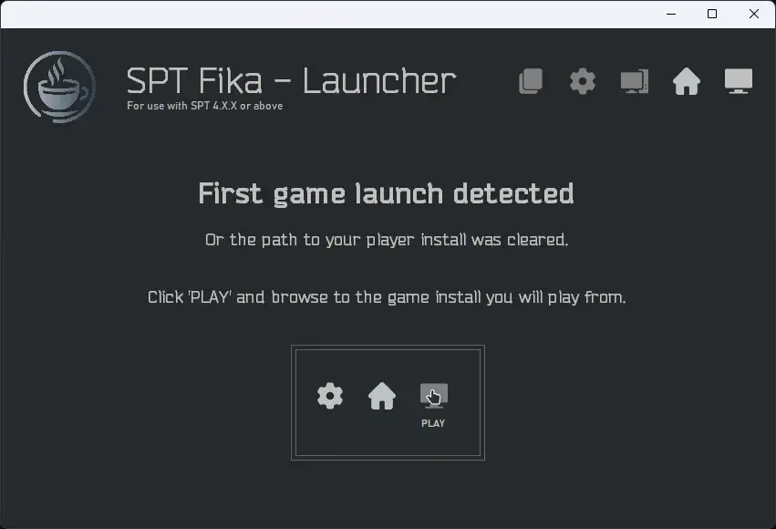
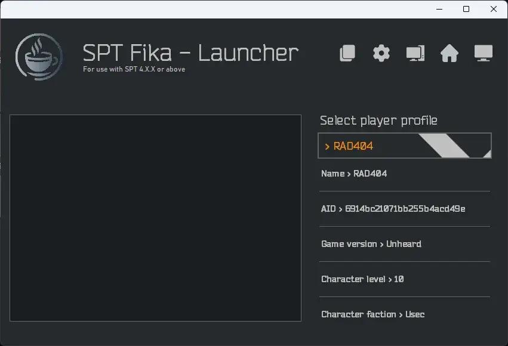
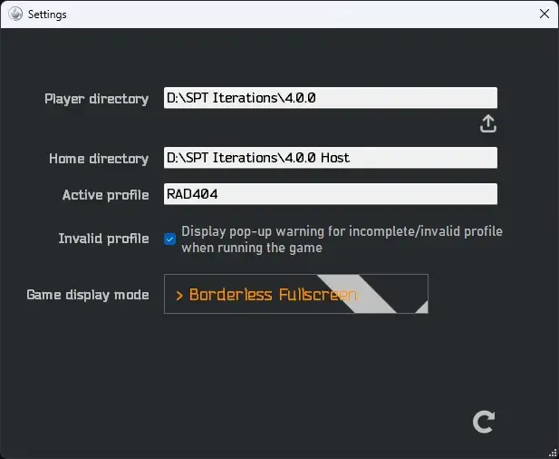

Fika Headless Launcher
- Downloads
- 3,860
- Favourites
- 9
- Mod lists
- 14
SPT-Fika Launcher
This a neat and simple little Windows-based launcher that I decided to write because running three different files to play my game is a hassle. In the process of writing this tool I became a fluent German and overengineered the heck out of it, but what’s life without some bugfixing?
It’s a very easy-to-use launch utility. It is however designed around Fika, so you will have to install Fika and its Headless plugin for this to work as intended.
Use the Fika Installer to install Fika before using this launcher.
- ❗️ You will have to complete the “Headless host” installation procedure.
First launch screen

After the initial introduction procedure

The settings window

-
Profile selection dropdown;
- The most recently modified/used profile will be displayed when you run the launcher;
- If no profiles are available, a warning is displayed instead;
- Profile memory is persistent and will save across sessions
-
Fluent task management;
- The SPT server, Headless client and Player client are all managed seamlessly without any user input!
-
Customizable Player directory;
- Swapping what game folder to play the game from is easy and fast;
- Useful for retaining your profile but changing your client mods
-
Pre-launch display mode;
- Changing between Windowed, Borderless or Fullscreen is easily done via the in-app settings
-
Pre-launch profile stats;
-
Last but not least: one-click play;
- After the initial introduction, one click is all you need to launch and play the game
-
Download the tool (big blue button);
-
Open the archive with 7-Zip;
-
Extract
SPT-Fika Launcher.exeinto your HOST folder (whereFikaHeadlessManager.exeis); -
Run/Open
SPT-Fika Launcher.exe; -
Follow the instructions;
-
Select your profile;
-
Click the
PLAYbutton (screen icon, top right); -
When done playing, exit Escape From THE CITY
Version
1.0.2
- Removed requirement for
FikaHeadlessManagerand its files to be present in the server directory;- This should hopefully stop the “Critical SPT content was not detected” for some users
- YOU WILL STILL NEED THE HEADLESS PLUGIN INSTALLED!
Please report any bugs you find via the comment section. There may be bugs I have not found yet.
- Describe your problem;
- What you were doing when it occurred;
- How you were trying to do said thing when it occurred.
Dependencies
Version
1.0.1
-
Added feature to minimize the launcher when launching the game;
-
Fixed server output font being janky and jagged;
- This may not have shown for people, but it bothered me
Please report any bugs you find via the comment section. There may be bugs I have not found yet.
- Describe your problem;
- What you were doing when it occurred;
- How you were trying to do said thing when it occurred.
Dependencies
Version
1.0.0
Initial release!
Please report any bugs you find via the comment section. There may be bugs I have not found yet.
- Describe your problem;
- What you were doing when it occurred;
- How you were trying to do said thing when it occurred.